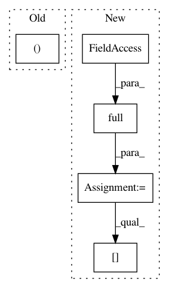

10a2ef19ee3851f2bd5aa6bc1b9d9cee3b03e5f4,src/spn/structure/leaves/piecewise/Gradients.py,,piecewise_gradient,#Any#Any#Any#,13
Before Change
gradient = (upper - lower) / (x_range[loc] - x_range[loc - 1])
gradient[marg_ids] = np.nan
return gradient.reshape((-1, 1))
def add_piecewise_linear_gradient_support():
After Change
raise ValueError("Input to piecewise_gradient cannot be None")
data = input_vals
obs = data[:, node.scope[0]]
gradient = np.full(input_vals.shape, np.nan)
x_range = expand(np.array(node.x_range), -np.infty, np.infty)
y_range = expand(np.array(node.y_range), 0, 0)
loc = np.searchsorted(x_range, obs)
upper = y_range[loc]
lower = y_range[loc - 1]
gradient[:, node.scope] = ((upper - lower) / (x_range[loc] - x_range[loc - 1])).reshape(-1, 1)
return gradient
In pattern: SUPERPATTERN
Frequency: 3
Non-data size: 5
Instances
Project Name: SPFlow/SPFlow
Commit Name: 10a2ef19ee3851f2bd5aa6bc1b9d9cee3b03e5f4
Time: 2018-12-06
Author: claas@voelcker.net
File Name: src/spn/structure/leaves/piecewise/Gradients.py
Class Name:
Method Name: piecewise_gradient
Project Name: dask/dask-image
Commit Name: f9aea094643fb3240193b0bc0f1908d5b84d82ab
Time: 2018-09-30
Author: jakirkham@gmail.com
File Name: dask_image/ndmeasure/__init__.py
Class Name:
Method Name: center_of_mass
Project Name: SPFlow/SPFlow
Commit Name: 10a2ef19ee3851f2bd5aa6bc1b9d9cee3b03e5f4
Time: 2018-12-06
Author: claas@voelcker.net
File Name: src/spn/structure/leaves/histogram/Gradients.py
Class Name:
Method Name: histogramm_gradient